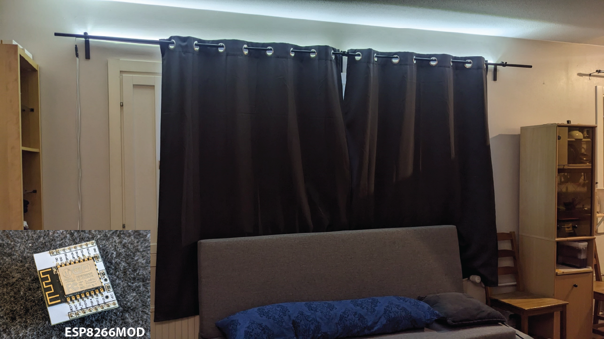
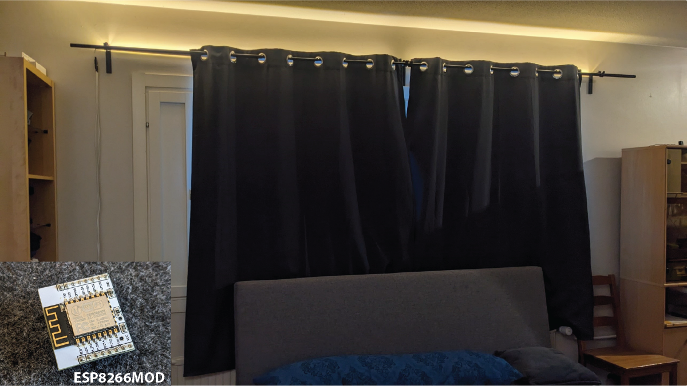
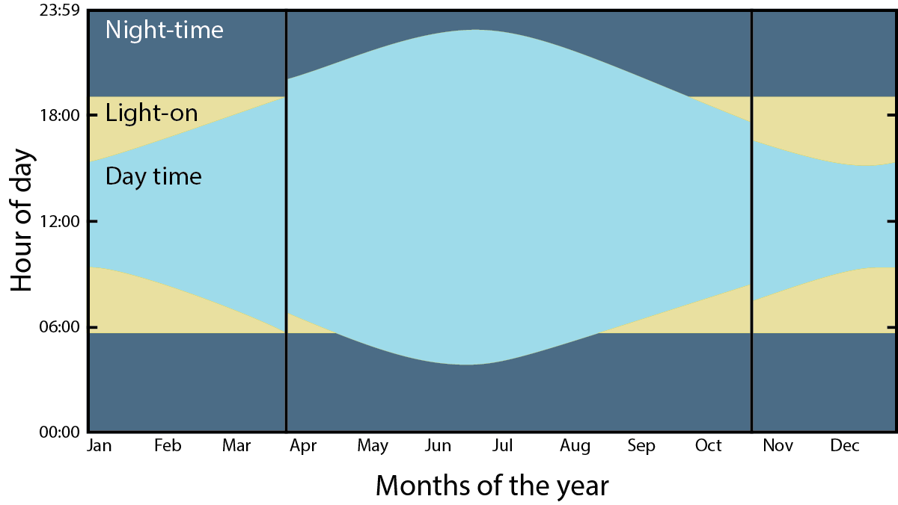
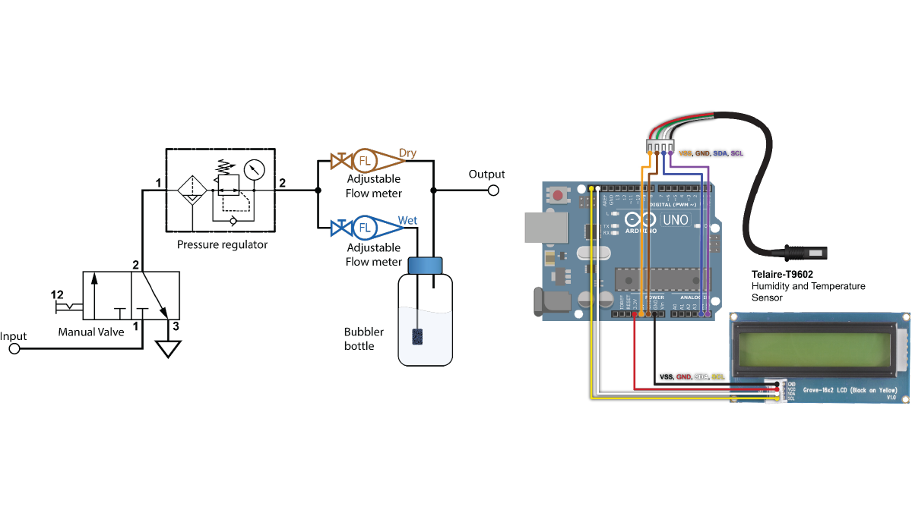
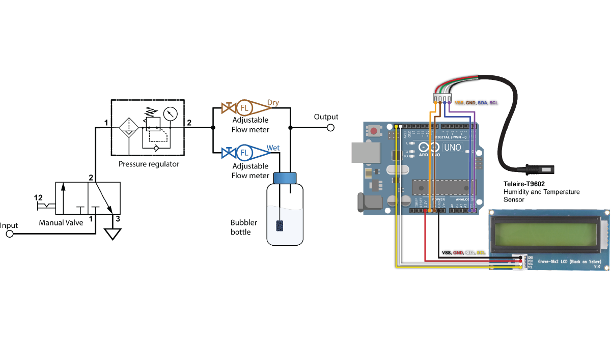

Winter lighting solution



The goal was to create a lighting solution that would light-up at dawn and dusk in
winter time, replacing the missing hours
of sun. However, it is not that simple. Here is how the device works:
Dawn cycle: In a winter day, at some prescribed hour at dawn, the lights dim up
slowly, emulating a sunrise. The lights start
with warm color and turn cold as the hours pass. Then the lights fade out when the
actual sun comes up.
Dusk cycle: At some prescribed hour at dusk, the lights dim up, replacing the
setting sun. The lights start
with cold color. Then, as the hours pass, the lights turn warm and slowly fade out
emulating a sunset.
To make this project I bought the LED strips and mounted them to aluminum profile bars
atop my window hangers.
For the control circuit, I needed a microcontroller with WiFi capability to synchronize
the internal watch with a reference time. So I used an ESP8266MOD I had in my electronics bins.
I did a bunch of research on daylight hours and made several calculations. The device
was ready at the end of summer of 2020, some two weeks before the date when it would first
turn on (i.e. daylight hours were low enough). So, I put the project on pause for two weeks.
When the time came, I plugged the device and started testing. I made the device work
with basic functionality but realized that to test it I would need to either collect data on
device operation over a whole year or develop a testing methodology to simulate different days
of the year and times of day.
In the end, I left the device work for a few days to see how I felt with the light coming
on at the prescribed hours. But soon enough the AMS1117 LDO voltage regulator that powered the
ESP8266MOD burned out. I suspect that the soldering process made the regulator bad. That can happen
when you try to solder a SMD onto a perf-board 😂.
Maybe one day I will come back to this project.
 
